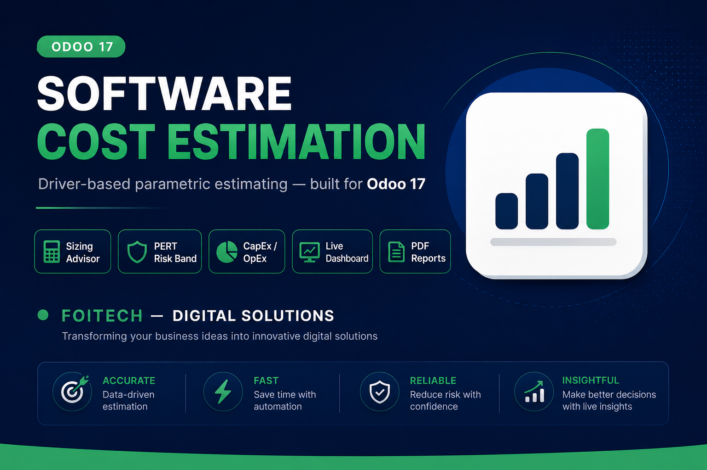
Turn project parameters into a transparent, audit-ready estimate: effort-based labour, a reusable cost-driver catalog, configurable markups, CapEx vs OpEx separation, a three-point (PERT) risk band, an approval workflow, a PDF report and a full analytics dashboard — all native to Odoo 17.
Persons × days × hours × rate, costed correctly so head-count is never double-counted. Rates come from a reusable role rate card.
Tables, interfaces, integrations, authentication, authorization, migration, localization and more — with three calculation methods: count × complexity × rate, flat unit price, and toggle.
Project Management, Testing, Training, Documentation and Maintenance, each applied to a selectable base (TDC, development, or labour) — in automatic or manual mode.
One-time build cost separated from recurring annual maintenance, plus a contingency reserve and optimistic / expected / pessimistic PERT band.
Draft → Under Review → Approved with chatter, a mandatory reject reason, a negotiation field, and a professional QWeb PDF estimate.
Answer a few questions and get a recommended Scope, Technology Variance and Architecture, with a clear rationale you can apply in one click.
A dynamic OWL dashboard with year / project / status / scope / architecture filters, KPI cards, live charts, scrollable rankings and a per-estimate deep-dive. Everything updates together.
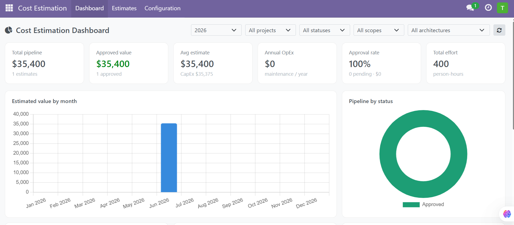
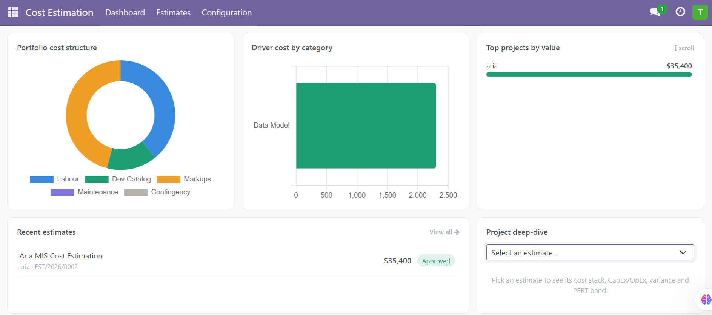
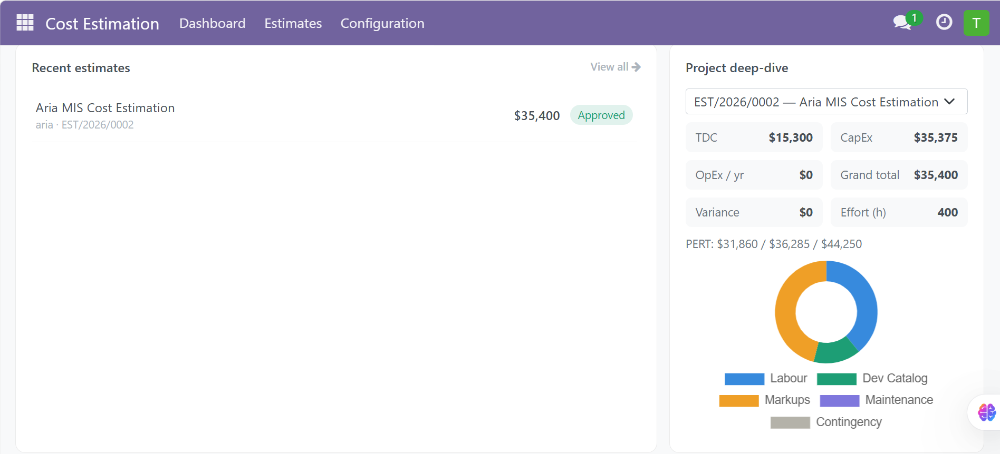
Labour phases, a full development-driver catalog, configurable markups, and a risk & negotiation tab — the totals recompute live as you type.
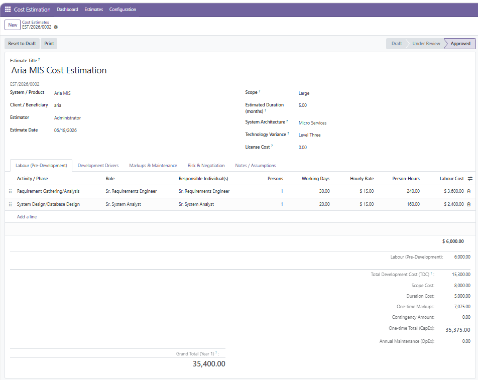
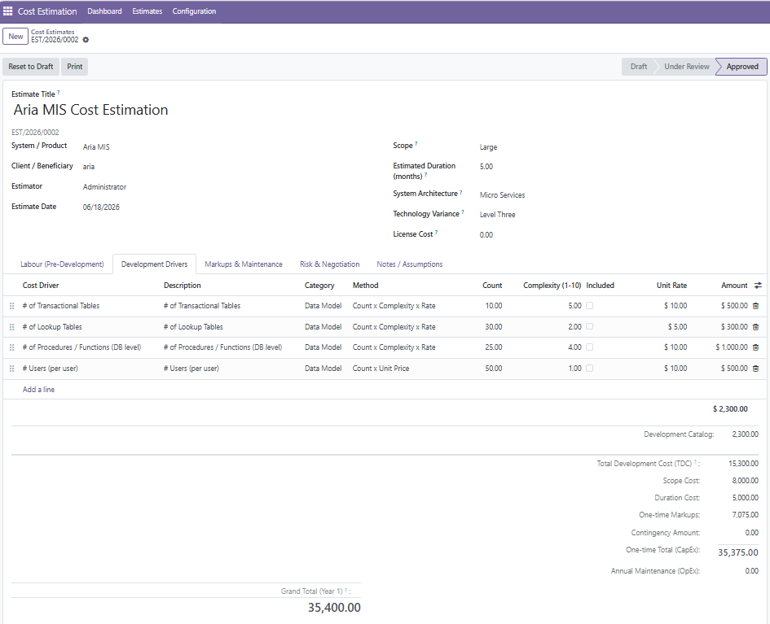
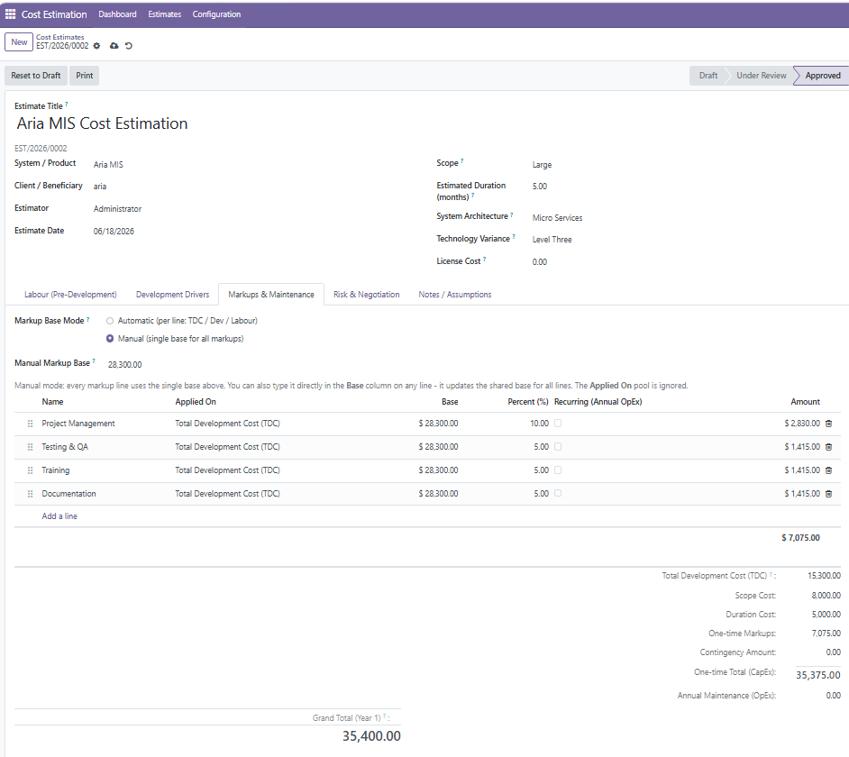
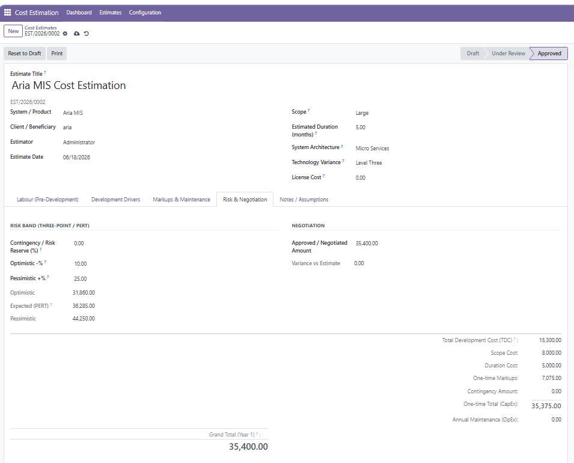
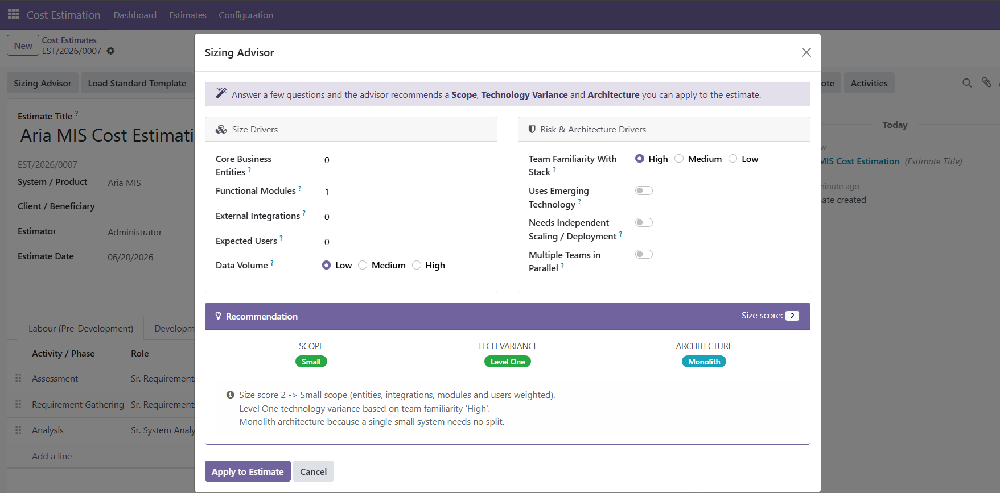
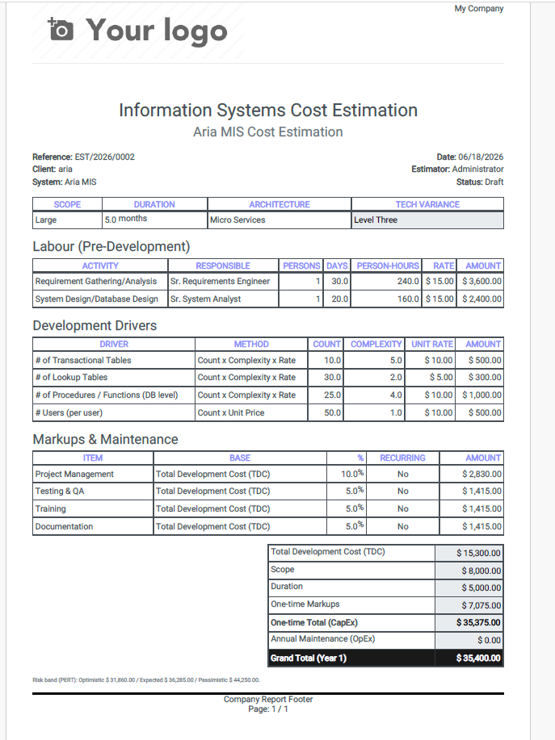
Calibrate the engine to your organisation: rate card, cost-driver catalog, markup templates and global cost factors.
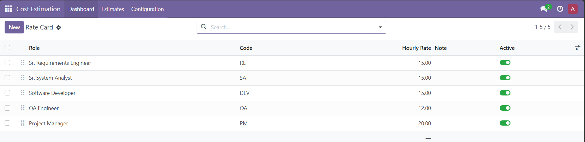
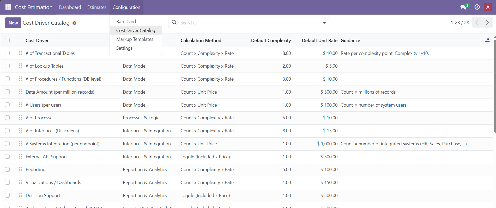
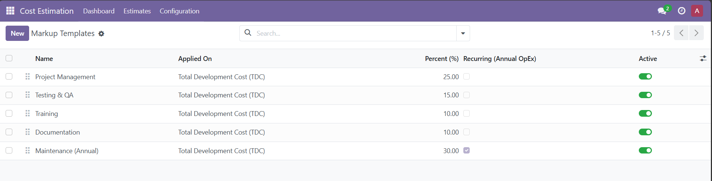
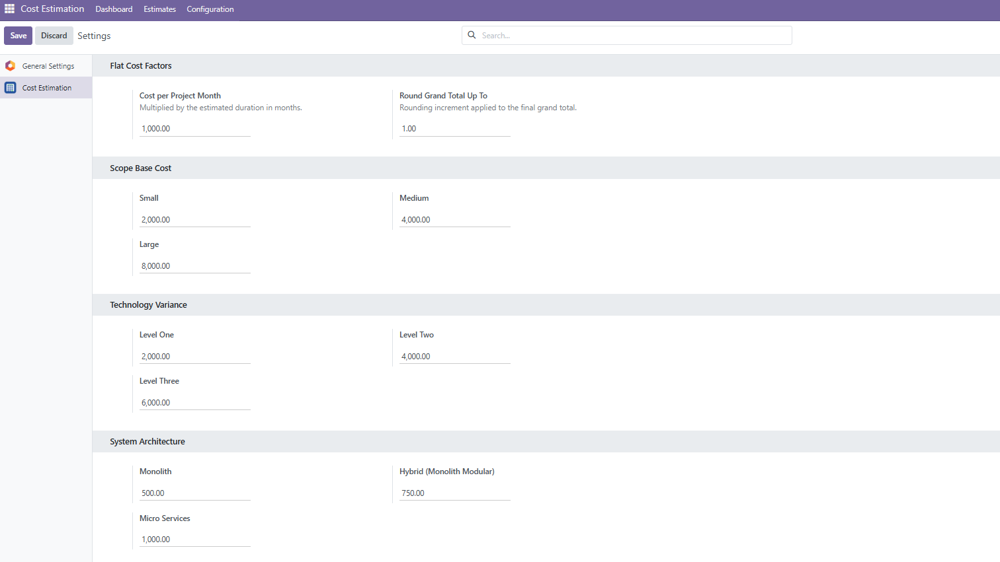
Create
Open a new estimate and set the project parameters.
Size
Load the standard template or run the Sizing Advisor.
Cost
Set counts, complexity and toggles; totals compute live.
Approve & report
Submit, approve, print the PDF, and track it on the dashboard.
Built for Odoo 17. Depends only on base and mail.
No external services required. Multi-company and multi-currency aware, with
security groups (Estimator / Estimation Manager) and record rules.
Licensed under LGPL-3 (free & open source).
Developed and maintained by Faridullah Qaderi
FOITECH — Digital Solutions
Support: faridullahqaderi54@gmail.com
LinkedIn